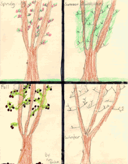

Student Project
Kara

My tree is an apple tree about 20 feet high. My tree is in my grandparents' backyard and it was there when they moved in 35 years ago. It is roughly 50 years old. I feel excited next to my tree because I like climbing its branches and I feel unique, like one of a kind, because my tree always looks different, so do I. The tree always comforts me and welcomes me into its branches.
I always used my tree even when I was a baby my swing was on its branches. Even my Mom used it when she was little. She made forts up in the tree. My grandma used the apples for apple strudel. In the next yard there is an apple tree too. Across the street in the yards there are some plum and pear trees, so I think this area was an orchard before the houses were built.
-Kara
c. Kara
Grade 4
Thomas Jefferson Magnet School
Euclid, Ohio USA
"The Seasons of my Tree"
Crayons, Glitter Glue, Oil Pastels, Markers and Pencil on Paper 9"X12"
Apple Tree
Latin Name: TBA
Age: 50 years old
Circumference at 54 inches from the base: TBA
Location: Euclid, Ohio USA
 Return to Main Page
Return to Main Page
June Julian jj68@nyu.edu